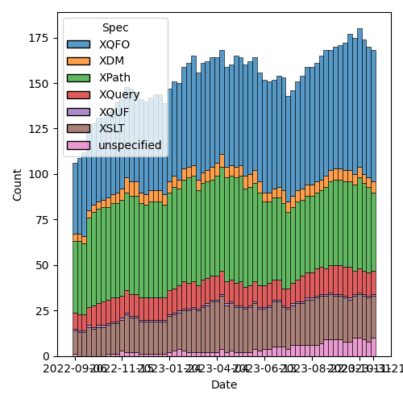
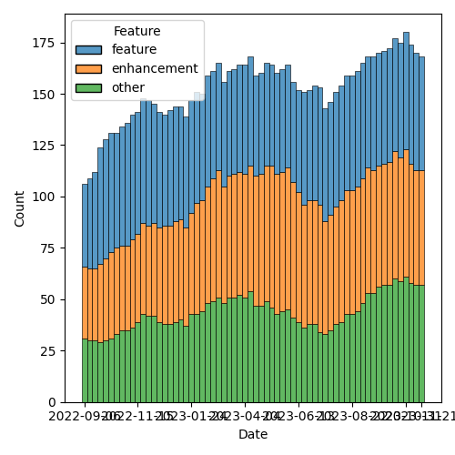

QT4 CG Meeting 056 Minutes 2023-11-28
Table of Contents
Agenda index / QT4CG.org / Dashboard / GH Issues / GH Pull Requests
Draft Minutes
Summary of new and continuing actions [0/9]
[ ]QT4CG-052-02: NW to consider how to schedule an “editor’s meeting”[ ]QT4CG-052-05: MK to rename thehexBinary-equalfunction tobinary-equal?[ ]QT4CG-052-06: MK to consider the editorial question of “promotion” for the symmetric relations.[ ]QT4CG-055-01: MK to clarify that the return type of the deep lookup operator is a flat sequence.[ ]QT4CG-055-02: DN to open an issue requesting examples of implausible expressions to clarify the spec[ ]QT4CG-056-01: MK to update PR #479 so that it merges cleanly.[ ]QT4CG-056-02: MK to update PR #412 so that it merges cleanly.[ ]QT4CG-056-03: MK to draft a PR to remove the function-namespaces feature.[ ]QT4CG-056-04: MK to write a proposal for adding a select attribute to xsl:text
1. Administrivia
1.1. Roll call [10/11]
CG gives regrets.
[X]Reece Dunn (RD)[X]Sasha Firsov (SF)[ ]Christian Grün (CG)[X]Joel Kalvesmaki (JK)[X]Michael Kay (MK)[X]John Lumley (JL)[X]Dimitre Novatchev (DN)[X]Wendell Piez (WP)[X]Ed Porter (EP)[X]C. M. Sperberg-McQueen (MSM) [0:10-][X]Norm Tovey-Walsh (NW). Scribe. Chair.
1.2. Accept the agenda
Proposal: Accept the agenda.
Accepted.
1.2.1. Status so far…

Figure 1: “Burn down” chart on open issues

Figure 2: Open issues by specification

Figure 3: Open issues by type
1.3. Approve minutes of the previous meeting
Proposal: Accept the minutes of the previous meeting.
Accepted.
1.4. Next meeting
The next meeting is scheduled for Tuesday, 5 December 2023.
Any regrets for the following meeting?
None heard.
When are we going to meet over the next few weeks?
✔5 December (yes)✔12 December (yes)✔19 December (yes)✘26 December (no)✘2 January, 2024 (no)
1.5. Review of open action items [0/3]
[ ]QT4CG-052-02: NW to consider how to schedule an “editor’s meeting”[ ]QT4CG-052-05: MK to rename thehexBinary-equalfunction tobinary-equal?[ ]QT4CG-052-06: MK to consider the editorial question of “promotion” for the symmetric relations.[ ]QT4CG-055-01: MK to clarify that the return type of the deep lookup operator is a flat sequence.[ ]QT4CG-055-02: DN to open an issue requesting examples of implausible expressions to clarify the spec
1.6. Review of open pull requests and issues
1.6.1. Merge without discussion
The following PRs are editorial, small, or otherwise appeared to be uncontroversial when the agenda was prepared. The chairs propose that these can be merged without discussion. If you think discussion is necessary, please say so.
- PR #857: 856 Drop reference to obsolete error condition in deep-equal()
Leave it for next week.
1.6.2. XSLT focused
These issues identify the XSLT-focused changes that have been made to the specifications but which have not been established by the community group as the status quo.
2. Technical Agenda
2.1. PR #470: 369: add fixed-prefixes attribute in XSLT
See PR #470.
MK reviews the PR.
- MK: Background is frustration with the number of namespace
declarations that are needed at the start of a stylesheet model.
- … Coupled with the fact that users would prefer to remove some of the boilerplate.
- … There’s an internal perspective that if the namespace bindings in scope change, we have to generate runtime code to check them even though the chances that they have any effect is negligible.
- … Function inlining and ohter optimizations are more complicated if the namespace bindings change.
- … Removing unnecessary namespace declarations is useful.
- MK: Proposal begins with a rewrite of the section on XSLT namespaces.
- … Native namespace bindings and fixed namespace bindings.
- … Must appear at the beginning of a model, cannot be changed in the module.
- … Uses a pre-defined catalog of shortname to URI mappings.
- … The stylesheet still has to be conformant with XML Namespaces.
- … But in XPath patterns, match patterns, etc. you can use the fixed ones.
Mike reviews the details of the changes in the XSLT elements and attributes.
- MK: The
fixed-namespacesattribute defines all of the bindings in the static context. You can use#standardor a list of short names or prefix=URI bindings, or a pointer to a document that has the desired bindings.- … The pointer trick lets all sub-modules refer to the bindings on the main module.
- … Declaring namespaces in
fixed-namespaceshas no effect on runtime execution. There are things that use namespace context at runtime, for example element constructors. Those have to be declared the conventional way. Another is casting strings to QNames. These namespaces aren’t going to be carried through to runtime just in case that happens.
- DN: I greatly support this. It would be very useful. I’m
disappointed that this doesn’t have any effect on the stylesheet. I
think the fixed namespaces attribute should default to
#standard. - MK: Yes, you could do that if 4.0 is specified.
- RD: With the type of the fixed name attribute, we should really
specify that more precisely. In the cases where there are a constant
or alist of constants it does things like
#defaultor prefixes. We should define the things like namespace declaration that are described separately and unioned against.- … Then when defining the schema, define the proper validation type for it.
- MK: Yes, but I haven’t attempted to do that.
- JL: Does this have any effect on
namespace-alias? - MK: No, because that only effects prefixes used in literal result elements.
- JL: I use a lot of namespace aliasing to generate code. But you
can’t get away from declaring the namespace.
- … You said it had no effect on the runtime. Does that mean that it implies a discard prefixes setting?
- MK: Yes, these prefixes are excluded automatically.
- NW: Prefix=URI? What about space? Should document that it will be broken.
- DN: I’m disappointed that this can’t apply to the stylesheet itself. I was hoping it would be a pre-processing step that would automatically generate the namespaces. When I mentioned XInclude, that’s a kind of pre-processor. I think we have other cases where we have to think about a general pre-processor for all X-languages.
Some discussion of how XInclude works.
- SF: I heard that modular development approaches are being incorporated. But is there a way of controlling the namespaces for subsequent stylesheets? If a module uses another module, can the caller override what’s used?
- MK: No, it’s the other way around.
- SF: But that’s the problem I’m highlighting. Many development scenarios can be simplified if the calling module can push things downstream. I think that we need support for that.
- MK: I think one of the conflicts here is trying to keep modules as independent as possible.
- SF: What about modules that are meant to be overridden?
- MK: I agree there are use cases there that this doesn’t try to address.
- … We already have a problem that a module can refer to variables and functions that are defined in another module. In a sense, there’s already too much dependency. At least the namespaces are unambiguous!
- SF: We do have the principles of in/out and out/in control. There are two sides in this equation. I want to have both. Do you think that the basic principle of modular development where everything can be overriden is necessary?
- MK: We have some features that work that way, template overrides for
example. But it makes testing and debugging terribly difficult. The
xs:redefinemechanism introduces the same kinds of problems into XML Schema. That’s whyxs:redefinetries to restrict what you can do and similarly, why packaging in XSLT 3.0 tries to control what kinds of overrides you can apply. This proposal doesn’t attempt to introduce any new overriding or redefining mechanism.- … There are clever tricks you can apply; using a shadow attribute
for the
fixed-namespacesattribute, for example. But the author of the module has to invite you to do that.
- … There are clever tricks you can apply; using a shadow attribute
for the
- SF: I would like to see the modular practices legitimized. I can always preprocess things. It would be nice to have more control.
- MK: Declaring the fixed-namespaces attribute to be the value of the
static parameter is something you can do if you want to organize
your workflow that way.
- … Whether I’d advise people to use that may depend on experience.
Proposal: accept this PR.
Accepted.
ACTION: MK to update PR #479 so that it merges cleanly.
2.2. PR #412: 409, QT4CG-027-01: xsl:next-match
See PR #412.
- MK: Again, this only effects XSLT. The issue this addresses is that
we now allow template rules to match things by type. That’s
particularly designed for processing JSON where you can match maps
by record type. The problem is that the type hierarchy doesn’t give
you a strict ordering which means that in
xsl:next-match, you can’t just say take the next template rule in the precedence and priority order.- … You have to take the type hierarchy into account and it doesn’t give you a linear order.
- … In the rules for conflict resolution §6.5, we change some of the rules.
MK reviews the new and udpated rules.
- MK: It won’t always give the right answer, it’s a heuristic that
often gives the right answer.
- … There are also new rules for import precedence.
- RD: If I understand this, the
xsl:next-matchworks on the same element. - MK: Yes,
xsl:next-matchsays I’ve applied a template rule, but what would I have chosen next if I hadn’t chosen this one. - RD: Right, so there’s no way for previous rules to be selected again.
- MK: Yes, there are rules to enforce that it’s the same item.
Proposal: accept this PR.
Accepted.
ACTION: MK to update PR #412 so that it merges cleanly.
2.3. Issue #742: xsl:function-library: keep, drop, or refine?
See issue #742.
- MK: This is in the spec, but hasn’t been discussed.
- … I did this in an attempt to reduce the number of namespaces you need to declare.
- … I don’t now think it’s an ideal solution to the problem.
- … The previous discussion came to the conclusion that this makes things more complicated.
- MK: I think my proposal is that we drop this.
- … I’d still like to find a solution to the problem of having to prefix function names, but I don’t think this is it.
- DN: I agree. I think JK’s observation about the name is relevant. For me, clearly the solution is using a separate function namespaces mechanism. We have good examples of this from other programming languages.
- MSM: I may be in a minority. This is a solution to a problem that I don’t think is a problem. I do think it should be said, I’m happy for functions to have namespace prefixes. When I was trying to learn Java, I found the absence of any notion of where things came from a constant source of irritation and confusion.
Propsal: drop this feature.
Accepted.
ACTION: MK to draft a PR to remove the function-namespaces feature.
2.4. Issue #169: Handling of duplicate keys in xsl:map
See issue #169.
- MK: This is a fairly minor change that just needs endorsement.
- … There’s a new
on-duplicatesattribute onxsl:mapthat defines what to do when duplicates occur. - … The expression on
on-duplicatesevalutes to a function that is called when duplicate keys arise.
- … There’s a new
- DN: Minor question: I don’t remember seeing any type restrictions on this function. Shouldn’t its return type be the type of the expected value type?
- MK: There isn’t an expected value type of
xsl:map. If you wrap it in anxsl:variable, there’s a check that what you constructed is appropriate.
Proposal: Accept this change
Accepted. Issue #169 reflects the status quo.
2.5. Issue #323: add select attribute to xsl:text
See issue #323.
- MK: Should we do this? It’s very similar to
xsl:value-of. - NW: I think that might be worth doing, just for users.
- RD: I like it to.
- DN: Don’t we already have a string interpolation?
- NW: Yes, but turning it on and off can be a pain in the neck.
- MK: Should you be able to have child instructions in
xsl:text. Inxsl:value-of, you can build the text one instruction at a time and it concatenates them. But very few people use it. - RD: Would that confuse the content model of
xsl:text. If you mixed text and element instructions, what would you get? - MK: That’s the rules for constructing simple content.
- DN: I think
xsl:textis the simplest possible thing in XSLT and I think it would not be useful. We’re making things more complicated. Especially taking that there are already other mechnisms. - WP: I’m on the fence, but one of the original uses of
xsl:textis to insert spaces. Both directions are veering away from the lean and mean model ofxsl:text. That being said, I’m split on the feature. I see the virtues, but I think DN is making a point. - RD: I like the consistency of it and the symmetry of it with the
other properties. It can be confusing to a user which instructions
support
selectand which ones don’t. Andxsl:textseems like a better name thanxsl:value-of.
Straw poll: who’d like to see a proposal?
In favor: 7 or 8. A clear plurality.
- MK: Ok, I’ll invest the time to write it.
ACTION: MK to write a proposal for adding a select attribute to xsl:text
3. Any other business?
None heard.